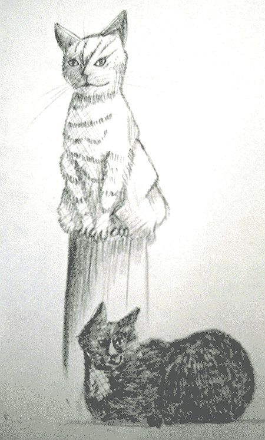
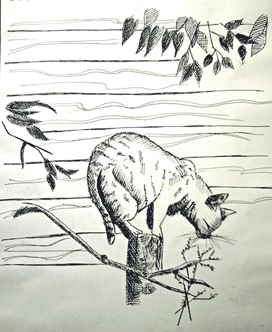
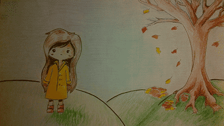

Waiting
Anonymous
The hands of time had passed two full revolutions
but to her they seemed as motionless as the corpse she saw in front of her.
She sat.
She waited.
She did not know what for, but nevertheless patiently remained,
staring at her still reflection in the pond across from her
the limp expression of her face mirroring back.
She noticed the dullness of her eyes, the lack of spark that everyone once claimed was what made her beautiful.
She saw the downturned corners of her mouth , which hadn’t seen the world right side up for a length of time even she couldn’t remember.
A feeling came over her chest where her heart once used to be.
It moved down from her chest into her navel.
She lifted her hand and placed it on her chest
and searched, but felt nothing but emptiness.
Her eyelids weighed down for just one moment, and the rainbow of blackened colours replaced the scenery of the outdoors.
When she lifted them again, she saw a new face.
One she had known, but only recently realized.
There was a smile on this face.
One that the girl knew well - the one filled with the hurt of experience.
The new face extended her hand and the girl reached out to accept it.
And in that one moment the girl felt that drum, the tiny fist inside of her, the one that had been muffled for so long, beat once again.
INSPIRATIONS
Carmen Tu
Creativity isn’t just reserved for aspiring artists, writers, and designers. Creativity is about breaking conventions, shocking the world and making your mark on society. It’s about expressing yourself—your true self. It’s about discovering and conjuring something no one has done before. But creativity is also improvisation, cleverness, and spontaneity such as writing an enlightening English essay within a two hour exam period. Perhaps you might be trying to answer job interview questions in a manner that will astonish the interviewer. Or, you're attempting to design an innovative science project for a science fair. Creativity has real world applications because it nurtures critical thinking to help develop analytical skills and drawing connections.
So whether you’re an artist or not, here are some ideas to help you plough through your creativity block:
- Websites:
- Sometimes we fall into the trap of waiting for inspiration and creative ideas to come to us. But inspiration comes from inside us. We must think, reflect, and relate to things in this vast world in order to wake up to epiphanies. Of course, it always helps to be exposed to fresh perspectives. www.stumbleupon.com is an excellent site to discover new perspectives and artwork by others. The site does exactly as it says in its name: it allows you to “stumble upon” different websites based on your preferences. You never what you’ll find and what you’ll be led to think of.
- Another site is http://www.smithmag.net/sixwords/ for writers. It’s a site where you explain how you feel about life today but in only 6 words. It forces you to be innovative with how you word your “life story” and shows how a little can mean a lot.
- http://www.thewriteprompts.com/ is a website providing daily prompts—either quotes, single words, or images—to provoke you to write something. Although these may be writing prompts, they can also be used as prompts for visual artists. Prompts are not limited to either writing or drawing. They’re interchangeable. You just have to make things work out.
- http://creativitygames.net/ is general site, which aims to incite creativity. They propose simple activities to promote imaginative thinking. For instance, they give you the word “flowerpot”, which is your starting word. You then take the word and relate it to another word, to create a situation. You then relate that word to another word and the chain continues. A flowerpot could be used at the beach to make sand castles and sculptures, some of these sculptures could be used as chairs and these chairs in turn could be used at a bonfire beach party or beach concert. So, we went from “flowerpots” to “beach party”.
- Song lyrics and titles also provide interesting prompts
- Applying for Executive positions at clubs or conferences or applying for any kind of leadership role can stimulate creativity because on those applications, thought-provoking questions are often asked. Since the application process is competitive, an original response is expected, forcing you to think of unique ideas. Also, during interviews, challenging questions have to be answered on the spot, which forces you to think quick and cleverly.
- Some general prompts:
- Write or draw anything, simply based on the word, “cacophony”
- “He had noticed that events were cowards: they didn’t occur singly, but instead would run in packs and leap out at him all at once” Neil Gaiman, Neverwhere. Create this story.
- What would happen if you met immortality and death in person? What would transpire if they met each other?
- Tell the story of an object you lost but never found. What happened to it?
- “They were breathless. They had found them. The islands in the clouds were real.” Invent this story.
- Defence
- Repent
- Absolute
- Picture Frame
- Use the following words in a story: burglar, forest, desk lamp, envelop
- A cab driver, a baby, a cigar, and a fire escape
- A never ending playground: draw or write this.



|